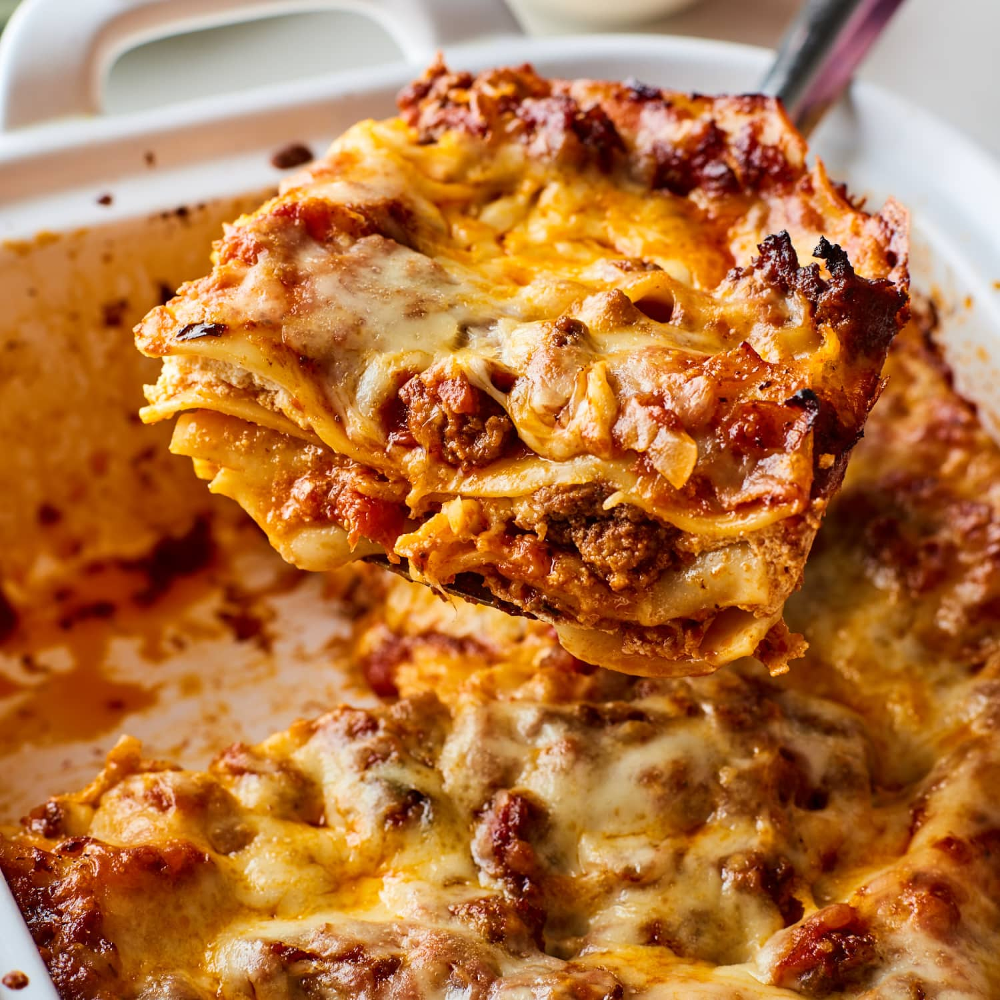

Some Belgian's Spicy Lasagna

Description
Because it's not a traditional Lasagna and "Spicy Bolognese - and Mornay-ish Sauce with Lasagna Pasta Sheets" is just too damn long.
Ingredients
-
Lasagna Pasta Sheets
-
~ 400 g
Italian soft wheat flour
-
~ 4 "large-ish" eggs
-
~ 1 pinch of salt
-
Spicy Spaghetti Sauce
-
A Dash or 2 of Olive Oil
-
~ 5 Garlic Cloves
-
~ 3 Celery Stalks
-
~ 1 or 2 Bay Leaves
-
~ 1 Eggplant
-
~ 1 kg of Minced Meat ( 50% beef - 50% pork )
NOTE: or whatever one prefers, but poor quality minced meat will fuck shit up
-
~ 800 g
Fresh Tomatoes
-
~ 300 g Sun-Dried Tomatoes
NOTE: Optional, but encouraged
-
Some Habanero Peppers, depending on your/someones/everyones tolerance.
NOTE: The cheese sauce will somewhat lower the spicy but one should try not to murder your/someones/everyones asshole at the end of the day
-
Salt, Pepper, Herbes de Provence, dried Jalapeño Flakes.
NOTE: Or any other Milder not-Habanero-Pepper to "Spread Out the Spicy" Steadily. Remember your/someones/everyones asshole
-
Mornay Sauce aka the Sauce for Macaroni and Cheese
-
~ 150 g All Purpose Flour
-
~ 150 g Butter
-
~ 1,5 lt Milk
-
~ 1 Average Onion, Peeled
-
~ 250+ g finely grated Parmigiano Reggiano
-
~ 250+ g grated Gruyère Cheese
-
~ 250+ g grated Emmental cheese
-
~ 250+ g grated Gouda cheese
-
Salt, Pepper,
Fresh Nutmeg and Cayenne
Instructions
-
Lasagna Pasta Sheets
-
Mound Flour on large Board, make Well and add Pinch of Salt.
-
Slowly and Steadily Mix Eggs with Inside Flour until "No Longer Runny" has been achieved.
-
Bring Outside Flour in, forming Large Mass on Board
-
Knead like itsa Bread ( pushing down with Heel of Hand ) until Dough achieved Smooth, Elastic, and just slightly Tacky Status.
NOTE: Dust Dough with more Flour if too damn Sticky, but too much Flour makes Tough Pasta
-
Roll Dough in Ball and Wrap in Cling film.
-
Take 30 minute Break
-
Take ⅙ Dough, Re-wrap Rest to Avoid Dry Out.
-
Roll until Flat enough to Pass through Pasta Machine or Thin enough to Almost See Fingers.
-
Cut into desired size
-
Let dry on rack or on a Lightly Floured Fine Tea Towel placed on a Wire Mesh Oven Tray (or similar) on Top of some Oven Dish ( for Air Circulation )
-
Repeat from Step 7 until End of Dough
-
Store till Use
NOTE: (Can be Stored, when Completely Dry and Stiff, for up to 1 week )
-
Spicy Spaghetti Sauce
-
Dice Vegetables to Small Dices
NOTE: Tomatoes are Berries!
-
Crush Garlic Cloves with flat Side of Knife
-
Minorly Chop Up Peppers
-
Throw Olive Oil and/or Butter in Pot/Pan, add Garlic and Peppers
-
-
If ( One Cares about Different Levels of Heat )
-
Grab and Add Diced Vegetables, Fry until Soft and
-
Fry Minced Meat in Separate Pan/Pot until Beginnings of Brown appear, then add ( to ) the Vegetables.
-
If ( One Cares about the Dishes )
-
Grab and Add Diced Vegetables, Fry until Soft
-
Add Meat to Pan/Pot until Beginnings of Brown appear
-
Add Tomatoes and Bay Leaves
-
Lower Heat, Let Simmer ( Partially Covered for 2+ hours, or until Sufficiently Reduced ), Stirring Occasionally.
NOTE: If using Fresh or Uncooked Pasta the Sauce needs to be a Little Liquidy.
-
Add Salt, Pepper, Herbes de Provence, dried Jalapeño Flakes to taste.
-
Store it Away for a Day
NOTE: Optional, but encouraged
-
Mornay Cheese Sauce
-
Melt Butter over Low Heat
-
Mix with sifted Flour until Paste ( aka Roux )
NOTE: Should smell a bit like Cookies and look Golden-ish
-
Slowly Add Milk while Whisking Away,
NOTE: Avoid making it Runny by Adding Milk to Fast due to Tired Arm/Bored Brain
Second NOTE: Lumps mean you fucked up.
-
Add Onion, let simmer for ~ 10-ish minutes
-
Take Pot of Fire, Remove Onion
-
Slowly Add Small Portions of All the Cheeses, Keep Stirring Until Melted
NOTE: Do not use all the Cheese! One Needs it to, at least, Top Off the Lasagna.
-
Add Salt, Pepper,
Fresh Nutmeg and Cayenne to taste.
-
Store it Away for a Day
NOTE: Optional, if made on the same day as the spaghetti sauce
-
The Actual Lasagna
-
Dice up Sun-Dried Tomatoes
-
Cook the pasta, in boiling salted water.
NOTE: Add a bit of Olive Oil to the Water so they don't stick together...or cook them one at a time
-
Butter Oven Dish Up
-
Spread Layer Spaghetti Sauce Over it, Add Splash of Cheese Sauce and Sprinkle with Sun-Dried Tomatoes
-
Add Layer of Pasta
-
Spread Layer of Cheese Sauce, Add Splash of Spaghetti Sauce
-
Add Layer of Pasta
-
Repeat Steps 4 to 7 until Almost at Top of Oven Dish
NOTE: LAST LAYER HAS TO BE THE CHEESE SAUCE! Plan accordingly!
-
Cover with grated Cheese and then some Butter Flakes
NOTE: To somewhat Avoid untimely Burning of Top Layer
Another NOTE: If it does Start to Burn too hard too damn soon, Cover with Aluminium Foil
-
Put in preheated Oven at 170-180 °c ( 338-356°F ) Until surface is Golden and Pasta in Cooked
NOTE: Check with Fork or other Tool fit for Job, should take about 30-ish minutes
-
Sit for 5-10 minutes before serving.
Last NOTE: Best done with Favorite Drink